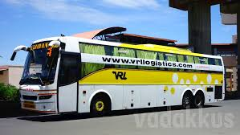
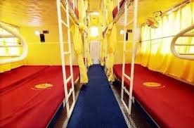
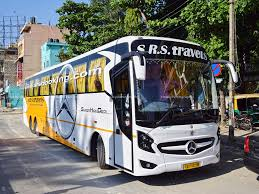
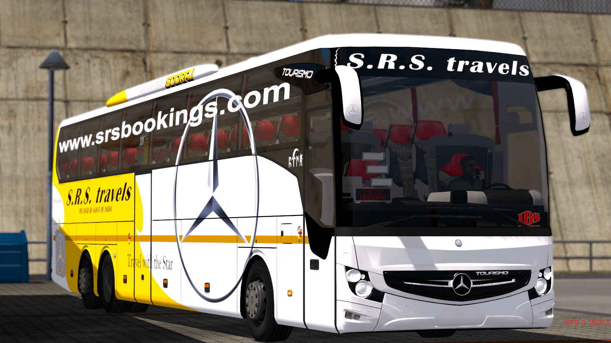
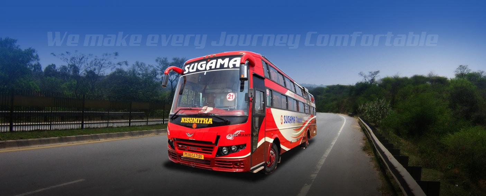
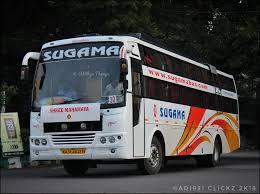

1) VRL BUS


VRL was founded in 1976 by DR.
Vijay Sankeshwar in Gadag,
a small town in North Karnataka with
a single truck and a vision that was
way ahead of its time. VRL gradually expanded
its services to Bangalore, Hubli and
Belgaum.
From this humble beginning VRL has
today grown into a nationally
renowned logistics and transport company which is also currently the
largest fleet owner of commercial vehicles in India with a
fleet of 4866 Vehicles (Including 291 Passenger
Transport Vehicles & 4575 Goods Transport Vehicles amongst others).
VRL finds mention in the Limca Book of Record as the largest fleet
owner of commercial vehicles in india in the Private Sector.
Mr. Vijay Sankeshwar has now been joined by his son Mr. Anand Sankeshwar
who brings in newer strategies to further drive the growth of the Company.
2) SRS BUS


The Savannah River Site was constructed during the early 1950s to produce the basic materials used in the
fabrication of nuclear weapons, primarily tritium and plutonium-239, in support of our nation's defense programs.
Five reactors were built to produce these materials. Also built were a number of support facilities including two
chemical separations plants, a heavy water extraction plant, a nuclear fuel and target fabrication facility, a
tritium extraction facility and waste management facilities.
3)SUGAMA BUS


Sugama Tourists takes you to the Goa is India's smallest state by area and the fourth smallest by population.
Located on India's west coast in the region known as the Konkan, it is bounded by the state of Maharashtra to the
north, and by Karnataka to the east and south, while the Arabian Sea forms its western coast. Goa is India's richest
state with a GDP per capita two and a half times that of the country as a whole. It was ranked the best placed state
by the Eleventh Finance Commission for its infrastructure and ranked on top for the best quality of life in India by
the National Commission on Population based on the 12 Indicators.